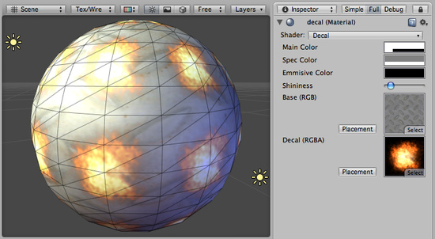

Decal

Decal Properties
This shader is a variation of the VertexLit shader. All lights that shine on it will be rendered as vertex lights by this shader. In addition to the main texture, this shader makes use of a second texture for additional details. The second "Decal" texture uses an alpha channel to determine visible areas of the main texture. The decal texture should be supplemental to the main texture. For example, if you have a brick wall, you can tile the brick texture as the main texture, and use the decal texture with alpha channel to draw graffiti at different places on the wall.
Performance
This shader is approximately equivalent to the VertexLit shader. It is marginally more expensive due to the second decal texture, but will not have a noticeable impact.